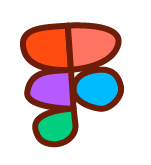
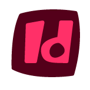
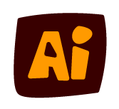
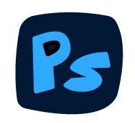
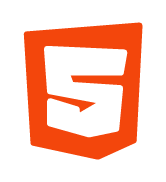
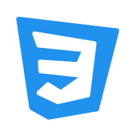
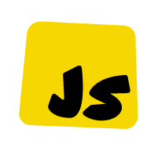
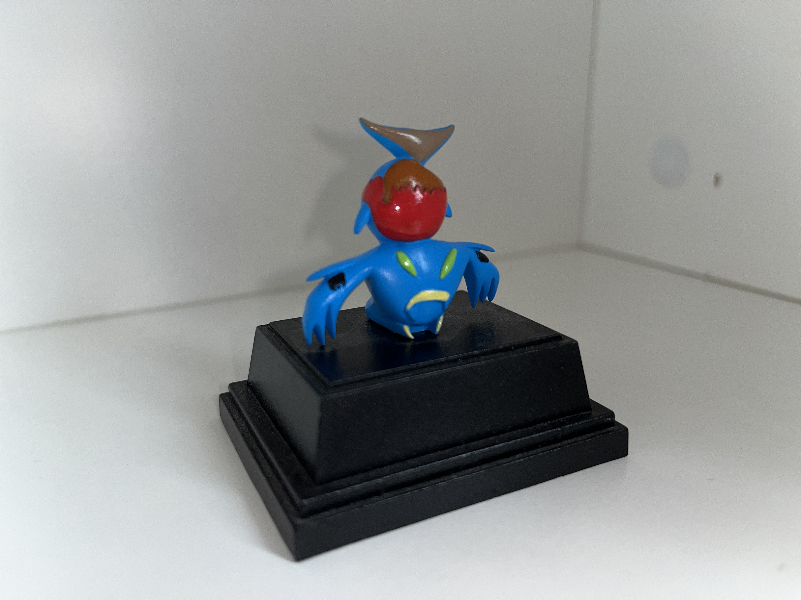
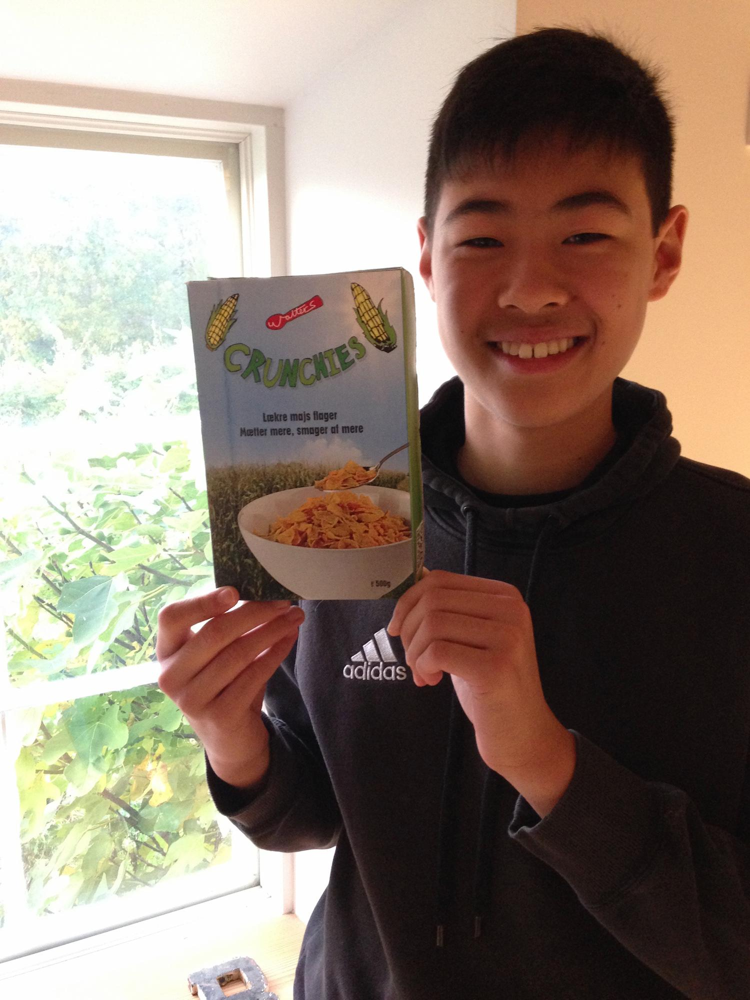
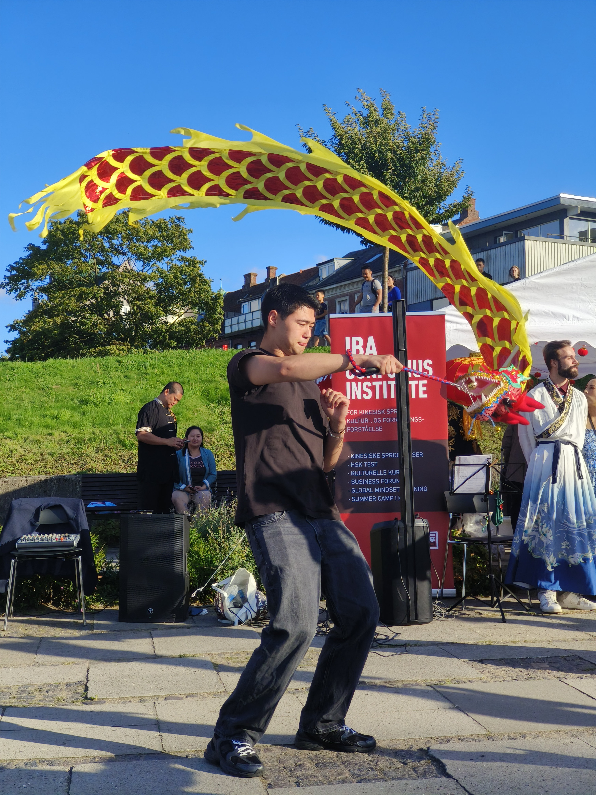

HVORFOR?
Min Inspiration
At se mine designs blive til noget virkeligt, er hvad der inspirerer mig.
Da jeg var 6 år gammel, tegnede jeg en lille figur, som jeg kaldte for Proaximon. Efter jeg sendte tegningen ind til en tegnekonkurrence, fik jeg Proaximon tilbage som en figur. En figur jeg kunne holde I mine egne to hænder. Han var blevet virkelig. Derfor designer jeg.
HVORDAN?
Mit Skill-set
Arbejdet med en stor digital værktøjskasse er vigtig i udførelsen af den helt rigtige løsning. At kunne tilegne sig nye værktøjer i processen er endnu vigtigere.
GRAFISK DESIGN
At skabe fængende visuelt materiale er, hvad jeg brænder for. Til udformelse af kampagne-, SoMe- og brand-materiale, såsom logoer, designguides og website-prototyper, har jeg gjort brug af disse programmer:




WEBUDVIKLING
Under uddannelsen har jeg arbejdet meget med hjemmesider, herunder responsivitet og webtilgængelighed. I processen fra visuelt content til praktiske produktioner, har jeg erfaring i disse programmer:



HVAD?
Mine Projekter
Arbejdet med konkrete opgaver, er hvad der skaber erfaring og mestring.
Se flere projekter
HVEM?
Min Rejse
Fra 6 år gammel scribbler til 2. Semester på Multimediedesign.

PROAXIMON
Min rejse til multimediedesigner startede allerede, da jeg var 6 år gammel. Jeg elskede at tegne monstrer og kreative kreaturer. I denne alder sendte jeg Proaximon ind til en GoGo Crazy Bones tegnekonkurrence, og jeg fik ham tilbage som en plastikfigur. Dette ser jeg som startpunktet på min rejse.

PRAKTIK HOS VIAH
I 2017 da jeg gik i 8. klasse, skulle jeg finde et sted at være i praktik. Jeg vidste, at jeg ville i praktik hos en grafisk designer, så jeg søgte i alle hjørner af Lolland Falster for at finde et sted, der ville have en 8. klasses elev som praktikant i en uge. Efter mange afvisninger fik jeg tilbudt en plads hos en enkeltmands grafisk design virksomhed VIAH i Nørre Alslev. Her fik jeg lov til at designe min egne emballage til en morgenmadspakke af mit eget fiktive morgenmadsfirma.

MULTIMEDIEDESIGN PÅ IBA
I august 2024 flyttede jeg fra min hjemby Sakskøbing på Lolland til Kolding for at starte på multimediedesigner uddannelsen på IBA. Denne uddannelse valgte jeg på baggrund af min passion for at designe emballager og grafisk materiale. Udover at kunne udøve min passion på uddannelsen, har jeg fundet en ny interesse og glæde i at kode webløsninger. Jeg har valgt at specialisere mig indenfor webudvikling for at bygge ovenpå mine evner i design og indholdsproduktion.
Kontakt mig